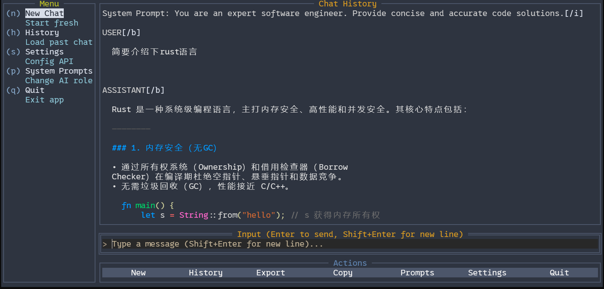

Eino Agent · Multi‑provider · Streamed
把多模型 Agent
装进你的终端里。
Chat‑TUI 是一款极简主义、高性能的终端 Agent 聊天应用。对话经 CloudWeGo Eino 的 ChatModelAgent + Runner 流式执行，一套 TUI 切换 OpenAI 兼容接口、Ark、Ollama、Claude、Gemini 等官方提供商。
CLI Preview
agent streaming
USER 用 Ark 豆包总结这段 panic。
AGENT · streaming · ChatModelAgent + Runner
[tool: none] 工具位已预留 · Esc / Stop 可取消
ASSISTANT 空指针在
bar()：foo 未判空。先补 guard，再看最近一次部署。USER 换成本地 Ollama 再问一遍？
ASSISTANT Settings 里把 provider 切到 ollama，模型填 llama3.2 即可。
> Type a message (Shift+Enter for new line)...
为高效 Agent 聊天而生的终端体验
多提供商
OpenAI 兼容、Ark、Ollama、Claude、Gemini、Qwen、DeepSeek —— 官方 eino-ext ChatModel，Settings 一键切换。
Eino Agent 流
ChatModelAgent + Runner 消费 AgentEvent：助手增量、tool-call / 多步状态、Esc 取消。
流式输出
打字机般的响应体验，边生成边阅读，告别等待。
多行输入
Shift+Enter 换行，Enter 发送，长文本编辑更自然。
Copy Mode
一键进入复制模式，选中文本并复制到系统剪贴板。
会话与主题
自动保存历史、系统提示、/read 注入文件；夜间与浅色主题都舒适。
openai
ark
ollama
claude
gemini
qwen
deepseek
真实界面，一目了然
来自项目内置截图，展示侧边栏、聊天区与操作栏的整体布局。

一分钟上手
go install github.com/evallife/chat-tui/cmd/chat-tui@latest
chat-tuigit clone https://github.com/evallife/chat-tui.git
cd chat-tui
go build -o chat-tui ./cmd/chat-tui
./chat-tui首次运行会写入 ~/.xftui.json。未填写 provider 时默认 openai，兼容原有 OpenAI 配置。当前带 Eino 的版本在 main；发版标签更新前请优先从源码构建。
快捷键速查
Ctrl+N 新建对话
Ctrl+H 历史记录
Ctrl+S 设置中心
Ctrl+E 导出对话
Ctrl+Shift+E 导出对话框
Ctrl+B 侧边栏
Ctrl+Y Copy Mode
Esc 取消流 / 退出
Shift+Enter 换行
主题预设
Night
Nord
Gruvbox
Solarized Dark
Light